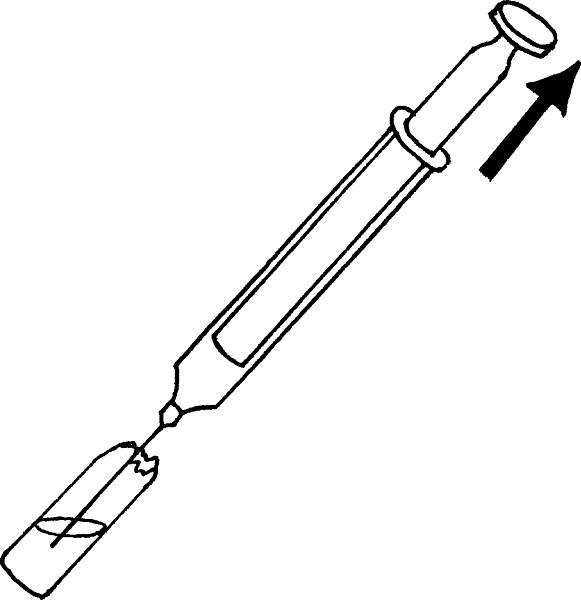

{% set pagetitle = "How to inject medicines
into muscle
If the medicine comes in an ampule" %}
{% set seq_length = 7 %}
{% set seq_position = 2 %}
{% set seq_llink = "How_to_injection_from_ampule1.html" %} ## set rlink equal to next page href
{% set seq_rlink = "How_to_injection_from_ampule3.html" %} ## set llink equal to previous page href
{% extends "templates.jinja/base.page-with-sequence.html" %}
{% block title %} Hesperian - Pregnancy & Birth{% endblock %}
{% block id %}Injection_from_ampule2{% endblock %}
{% block content %}
- Put the needle into the ampule. Be careful the needle does not touch the outside of the ampule. Hold the barrel of the syringe steady and pull the plunger - this will draw the medicine into the syringe.
{% endblock %}
{% block footer %}
{% endblock %}